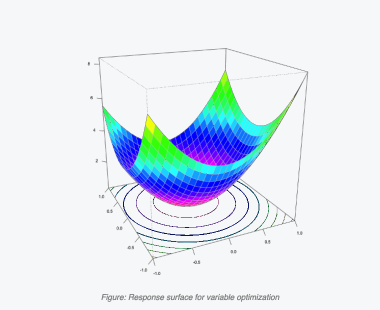

Case study · Quality by Design
01
Finding the optimal solution
Know more by doing less — a full QbD response-surface approach that pinpoints the optimum and the interactions between factors.
The challenge
Three variables — pH, Variable 1 and Variable 2 — were critical to system stability, but the optimal combination of values was unknown.
Our approach
A CCC design of just 16 experiments defined the ranges, fit a model, and pinpointed the optimum — together with the interactions between factors.
16experiments to optimum
pH 3.2Var 1 · 0.9 g / Var 2 · 72%
- Lead solution discovered
- Factor interactions quantified
- Patented results, full QbD approach
When it's practicalBest when optimizing multiple variables with as few runs as possible.

Response surface for variable optimization